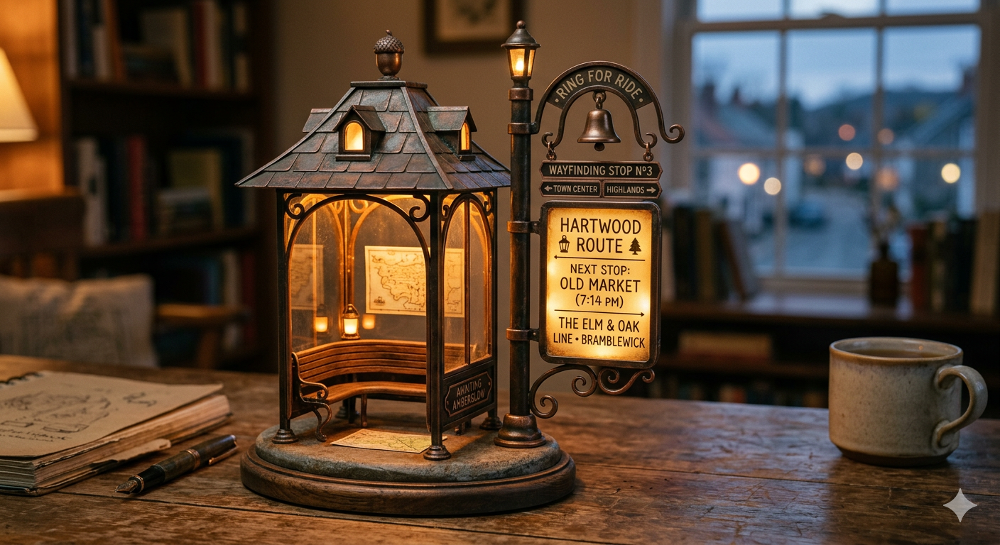

互動式微縮候車亭
黃昏驛站長椅版
這款名為黃昏驛站的桌面互動微縮擺件，專為營造寧靜、溫暖氛圍而設計。它結合了維多利亞式鐵藝與故事書幻想風格，以精緻深色金屬支架與帶歲月痕跡的黃銅頂蓋，呈現出溫潤的舊物感。
候車亭內嵌暖琥珀色 LED，模擬黃昏燈籠般的發光效果，為桌面提供舒緩的環境光。側邊整合高解析微型螢幕，外覆磨砂玻璃，可顯示當前時間與日期、動態提醒，以及自定義引言，讓功能與故事感自然結合。
底盤採用實木與仿石紋理，主體選用壓鑄合金，細節更點綴青苔與磨損刻痕，進一步強化迷你古鎮驛站的真實感。它的目的，是讓使用者在忙碌工作間隙低頭一瞥時，感受到躲進安靜童話小鎮的片刻慰藉。
- 材質方向：壓鑄合金、實木底盤、仿石紋理、黃銅細節
- 顯示內容：時間、日期、動態提醒、自定義文字
- 氛圍關鍵字：溫暖候車、童話小鎮、靜靜陪伴